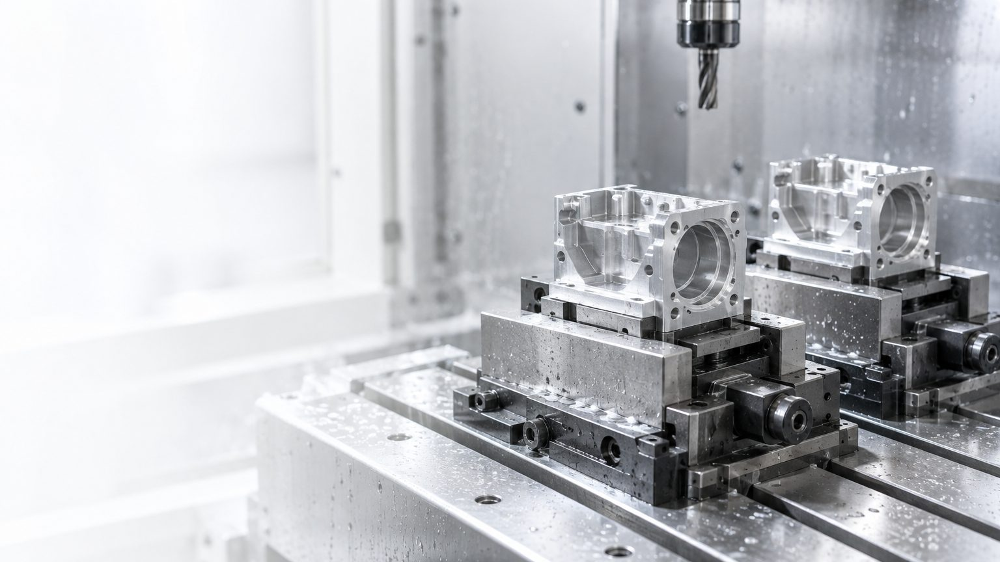
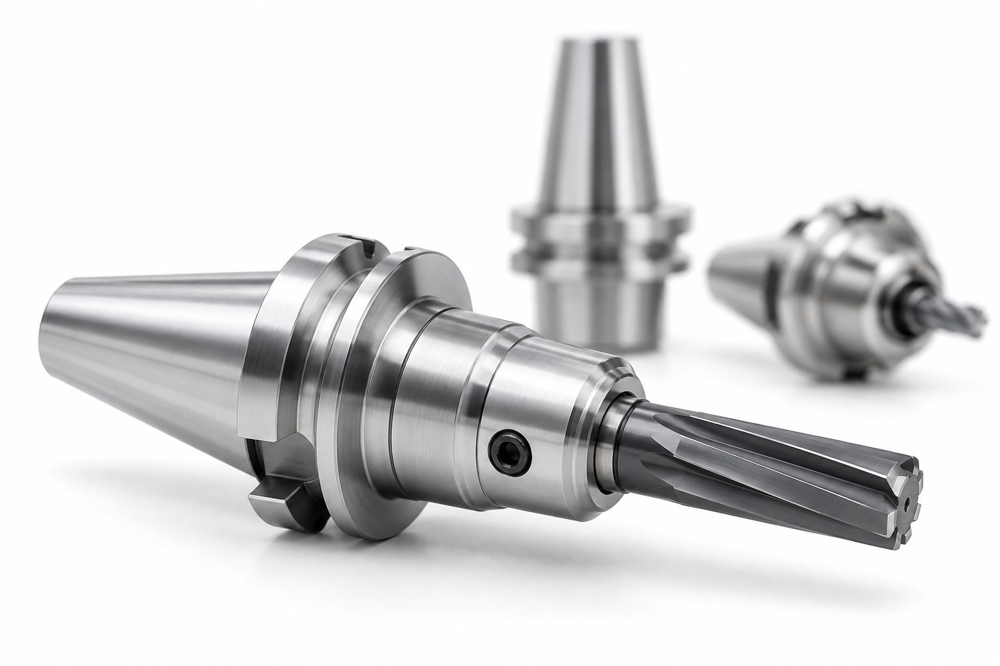
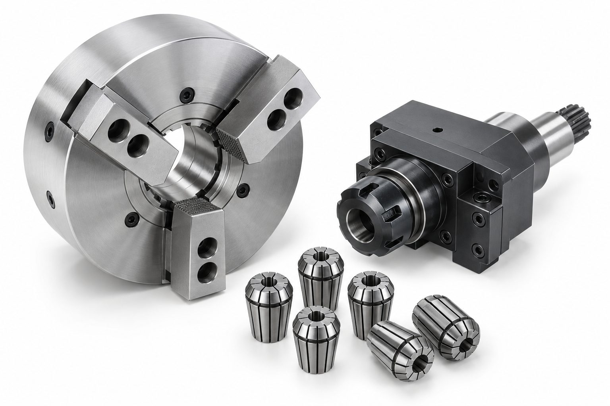
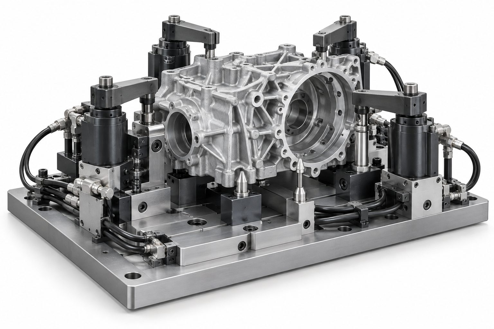
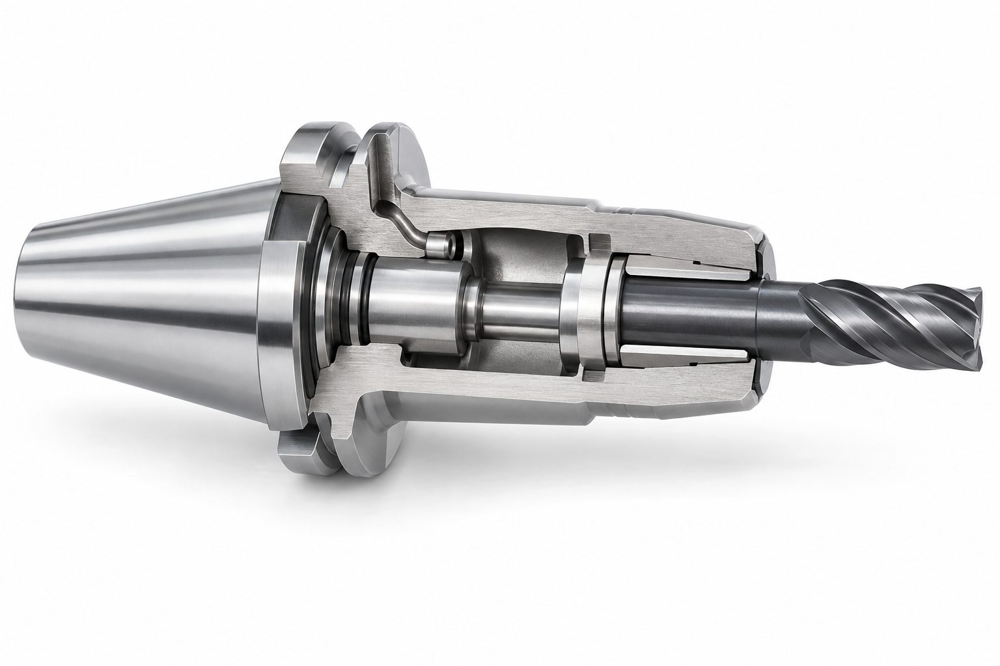

Станочная оснастка для станков с ЧПУ
Зажим детали, инструментальные оправки и специальные приспособления — жёсткость, повторяемость и быстрая переналадка.
Что входит в поставку
Каждый модуль подбираем отдельно или собираем в комплект под станок, деталь и требования к точности.

Зажим детали
Решения для надёжной фиксации заготовки, сохранения базы и повторяемости при единичной, мелкосерийной и серийной обработке.

Оснастка инструмента
Оправки и системы крепления инструмента под жёсткость, биение, вылет, обороты шпинделя и требования к чистоте поверхности.

Оснастка для токарных станков
Комплектуем токарную обработку под диаметр, длину детали, прутковую подачу, противошпиндель и требования к биению.

Оснастка для 4-й и 5-й оси
Решения для сложной геометрии, минимизации переустановов и стабильного доступа инструмента к детали.

Специальная оснастка
Проектируем и подбираем приспособления под конкретную деталь, маршрут обработки, партию и условия запуска на производстве.
Не позиция из каталога, а рабочий комплект
Отталкиваемся от детали и операции: что нужно удержать, как базировать, где риски деформации и какая переналадка нужна участку.

Обрабатываете валы?
Собираем связку под длину, диаметр и биение.
→ патрон + люнет + центрОбрабатываете корпусные детали?
Подбираем базирование, зажим и доступ инструмента.
→ тиски + поворотный стол
5-осевая обработка?
Снижаем переустановы и удерживаем стабильную геометрию.
→ спутники + специальное креплениеБиение патронов и оправок
Биение забирает стойкость инструмента: кромки нагружаются неравномерно. Чем точнее операция, тем меньше биения допустимо.

Патрон для насадных фрез — для торцевого фрезерования; резьбонарезной патрон с компенсацией — для метчика без синхронизации шпинделя с подачей. Значения — ориентиры для типовых исполнений; рабочие цифры — по каталогу производителя.
Интерфейсы станка
Интерфейс задан шпинделем или револьверной головкой. Оснастку подбираем под него.
Фрезерные обрабатывающие центры азиатского производства. Есть двухконтактное исполнение BBT — контакт по конусу и торцу.
Фрезерные центры европейского производства.
Высокие обороты и пятиосевая обработка — контакт по конусу и по торцу.
Модульные системы, токарно-фрезерные центры.
Токарные станки с револьверной головкой VDI.
Токарные центры с приводным инструментом.
Сверлильные и универсальные станки.
Типовые ошибки
Причину брака часто ищут в инструменте и режимах, а она в установе.
Дорогая фреза в изношенном цанговом патроне
Стойкость теряется на биении — инструмент не отрабатывает свою цену
Цанга не под точный диаметр хвостовика
Падает усилие зажима, инструмент проворачивается или вырывается
Вылет больше необходимого
Вибрация, ограничение по глубине и подаче, следы на поверхности
Перетянутая гайка цанги
Деформация цанги и рост биения вместо его уменьшения
Биение при сборке не контролируют
Причину брака ищут в инструменте и режимах, а она в установе
Переналадку выверяют индикатором каждый раз
Время переналадки умножается на число партий за год
Частые вопросы
Да, оснастку можно заказать отдельно под уже имеющийся станок и деталь.
Термозажим даёт максимальную жёсткость и минимальный вылет — он хорош на высоких оборотах и в глубоких карманах, но требует термоустановки и подходит только под цилиндрический хвостовик своего диаметра. Гидропластовый зажимает без нагрева, лучше гасит вибрацию и удобнее на чистовых операциях и развёртывании.
Интерфейс задан шпинделем станка, поэтому сменить его нельзя. Можно подобрать оснастку под существующий конус или применить модульную систему, где сменной остаётся только рабочая часть.
Опишите деталь — получите решение
Передайте параметры детали, материал, допуски и партию. Мы подберём оснастку под станок, инструмент и технологический маршрут.